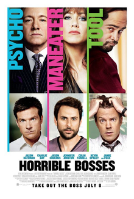
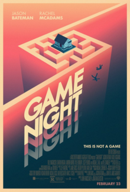

Categories
My Favourite Comedy Movies
Horrible bosses
Nick Hendricks and Dale Arbus are friends who despise their bosses. Nick works at Comnidyne, a financial firm for the sadistic David Harken, who hints at a possible promotion for Nick for months, only to award it to himself. Dale is a dental assistant being sexually harassed by his boss, Dr. Julia Harris; she threatens to tell his fiancée Stacy that he had sex with her unless he actually has sex with her. Nick and Dale's accountant friend Kurt Buckman enjoys working for Jack Pellit at a chemical company, but after Jack unexpectedly dies of a heart attack, the company is taken over by Jack's cocaine-addicted son Bobby, whose apathy and incompetence threaten the future of the company.
At night, over drinks, Kurt jokingly suggests that their lives would be happier if their bosses were no longer around. Initially hesitant, they eventually agree to kill their employers. In search of a hitman, the trio meet Dean "Muthafuckah" Jones, an ex-con who agrees to be their "murder consultant." Jones suggests that Dale, Kurt and Nick kill each other's bosses to hide their motive while making the deaths look like accidents.
The three reconnoiter Bobby's house, and Kurt steals his phone. They next go to Harken's house, where Kurt and Nick go inside while Dale waits in the car. Harken returns home and confronts Dale for littering, but then has an allergy attack from the peanut butter on the litter. Dale saves Harken by stabbing him with an EpiPen. Nick and Kurt think Dale is stabbing Harken to death and flee, with Kurt accidentally dropping Bobby's phone in Harken's bedroom. The next night, Kurt watches Julia's home, but she seduces and has sex with him. Nick and Dale wait outside Bobby's and Harken's houses, respectively, to commit the murders. Harken discovers Bobby's cellphone in his bedroom and uses it to find his address, suspecting his wife Rhonda is having an affair. He drives over and kills Bobby, while Nick secretly witnesses the murder.
Nick flees at high speed, setting off a traffic camera. The trio meet to discuss their reservations about continuing with their plan. They are questioned by the police, who believe the camera footage makes them suspects in Bobby's murder. Lacking evidence, the police are forced to let the trio go free. The trio consult with Jones again, but learn that he never actually killed anyone, having been imprisoned for bootlegging a film. Jones suggests that they get Harken to confess and secretly tape it. The three accidentally crash Harken's surprise birthday party, where Nick and Dale get Harken to confess to the murder before realizing that Kurt, who has the audio recorder, is elsewhere having sex with Rhonda. Harken threatens to kill all three for attempting to blackmail him. They flee by car, but Harken gives chase and repeatedly rams their vehicle. Believing they have committed a crime, the car's navigation-system operator remotely disables Kurt's car, allowing Harken to catch and hold them at gunpoint. Harken shoots himself in the leg as he boasts about his plan to frame them for murdering Bobby and attempting to kill him to get rid of the witness.
The police arrest Nick, Dale and Kurt, but the navigation-system operator, Gregory, reveals that it is his company's policy to record all conversations for quality assurance. Gregory plays the tape that has Harken confessing he murdered Bobby. Harken is sentenced to 25 years to life in prison, while the friends get their charges waived. Nick is promoted to president of the company but under a sadistic CEO, Kurt retains his job but also under a new boss, and Dale, with the help of Jones, blackmails Julia into ending her harassment.
Game night
Married competitive gamer couple Max and Annie are trying to have a child, but their attempts are unsuccessful due to Max's stress surrounding is feelings of inadequacy when compared to his successful, attractive brother Brooks. During Max and Annie's routine weekend game night with their friends Ryan, and married couple Kevin and Michelle, Brooks shows up Max by arriving in a Corvette Stingray (Max's dream car) and sharing an embarrassing childhood story about Max to throw Max off during a game. Brooks offers to host the next game night at a house he is renting while he is in town. Meanwhile, Max and Annie are trying to keep their game nights secret from their neighbor Gary, an awkward police officer left distraught after his divorce from their old friend Debbie, who has since moved away.
When the guests, including Ryan's new date, Sarah, arrive at Brooks' house the following week, Brooks says he has initiated an interactive role-playing mystery game, promising the winner his Stingray. A man dressed as an FBI agent bursts into the home and informs them of the narrative of the mystery, only for two masked men to break in and assault him and Brooks. The guests believe the assault is part of the game, so they just watch and comment on the struggle. After Brooks is dragged out of the house, the couples begin to solve the mystery using the clues left behind by the actor.
Using his GPS location, Max and Annie track Brooks down to a seedy bar and, using a pistol left behind by Brooks during the struggle (which they believe to be fake), manage to take the keys to the storage closet, where Brooks is being held. After Annie mistakenly fires the gun and shoots Max in the arm, confirming the weapon is real and that they are in actual danger, the three escape. Brooks admits that he actually makes his living buying and selling illegal items on the black market, in particular a Fabergé egg sought by a man known only as "the Bulgarian" and owned by a man using the alias Marlon Freeman. With his captors in pursuit, Brooks exits the moving car to guarantee Max and Annie's escape.
Eventually, the others learn what they have become involved in, avoiding police because of Brooks' warnings about the Bulgarian having moles in the government. Trying to determine the identities of the Bulgarian and Marlon Freeman, they show up at Gary's house, under the false pretense of a game night, in order to use his police computer, where Max discovers the address of Marlon Freeman (real name: Donald Anderton). The group leaves Gary's house and arrives at Anderton's address, where he is hosting an underground fight club. As the others search the house, Ryan spots the egg in a wall safe and is caught trying to steal it. The group escapes with the egg, but accidentally break it. They discover the egg is a worthless fake, but end up finding a list of names that was stored inside of it, realizing this was what the Bulgarian wanted.
The group finds Brooks and his captors on an under-construction bridge and move in to rescue him. Before the captors are able to kill them, the group is saved by Gary, who is then shot in the chest. Max and Annie try to encourage him to pull through by promising to invite him to every future game night. Gary then reveals that he faked the entire scenario in an attempt to trick them into letting him join game night again. He is, however, unaware of the egg, and they are immediately attacked by the real Bulgarian, who captures Brooks after he swallows the list, revealed to be people in the witness protection program. Max and Annie use Brooks' Corvette to drive to the airport and stop the Bulgarian from taking off with Brooks in his jet. They eventually knock the Bulgarian out and dispatch his henchmen, tie him up, and free Brooks.
Three months later, Brooks, now under house arrest for his crimes, has managed to sell the list for $3 million (having also tipped off the witnesses for $20 thousand each). Meanwhile, Annie has finally become pregnant. While the group (including an inept Gary) are continuing their game night, men with guns get ready to storm the building.
Mid-credits, Gary's intricate plan for his re-institution into game night is shown. He has collected a series of ID cards featuring the friend group, one of which shows that Ryan is a Harvard alumnus (though it isn't clear whether he had graduated or was kicked out). A running joke through the film is that Michelle had sex with someone whom she thought was Denzel Washington. A post-credits scene shows a flashback of Gary's ex-wife Debbie meeting Kenny (not Denzel) at a gas station.


| © Yafet Lulseged, 2020 | You're looking great today. |